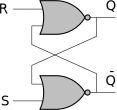
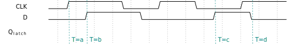
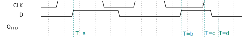

ELO211 Sistemas Digitales
Circuitos secuenciales
Marie González-Inostroza
Circuito secuencial
Sus salidas dependen de la entrada actual y las anteriores.
Por lo tanto, tienen memoria
¿Cómo implementar una memoria?
Latches
Cambia según sus señales de control
Flip-flops
Cambia según sus señales de control en los cambios del reloj
Latches tipo SR



Latches tipo D
Flip-Flop D

Clock
Periodo (T): duración de un ciclo del clock
frecuencia (f): cantidad de ciclos por unidad de tiempo f=1/T

Registros
Cuando queremos guardar información de largo N, usamos un grupo de N flipflops que usan el mismo clock
¿Qué entradas debe tener un latch SR para conservar su estado?
a) S=0, R=0
b) S=0, R=1
c) S=1, R=0
d) S=1, R=1
¿En qué tiempo NO cambia la salida del latch tipo D?
¿En qué tiempo cambia la salida del Flip-flop tipo D?
Comenten dentro de cada grupo de proyecto
¿De qué trata su proyecto?
¿Cuáles son los principales bloques y cómo funcionan?
¿Qué bloques son combinacionales y cuáles son secuenciales?